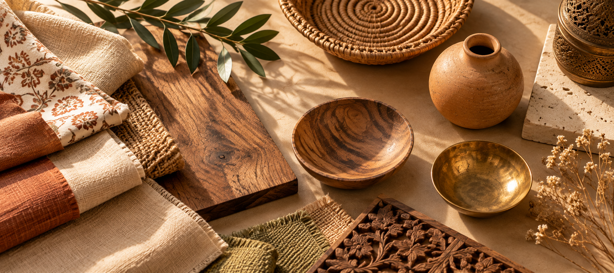
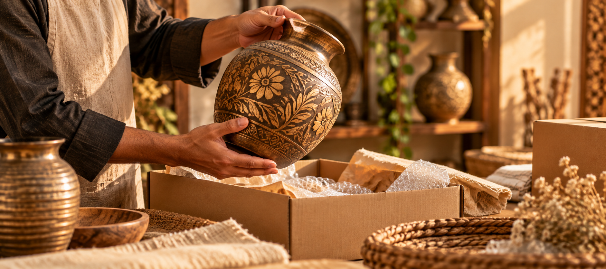
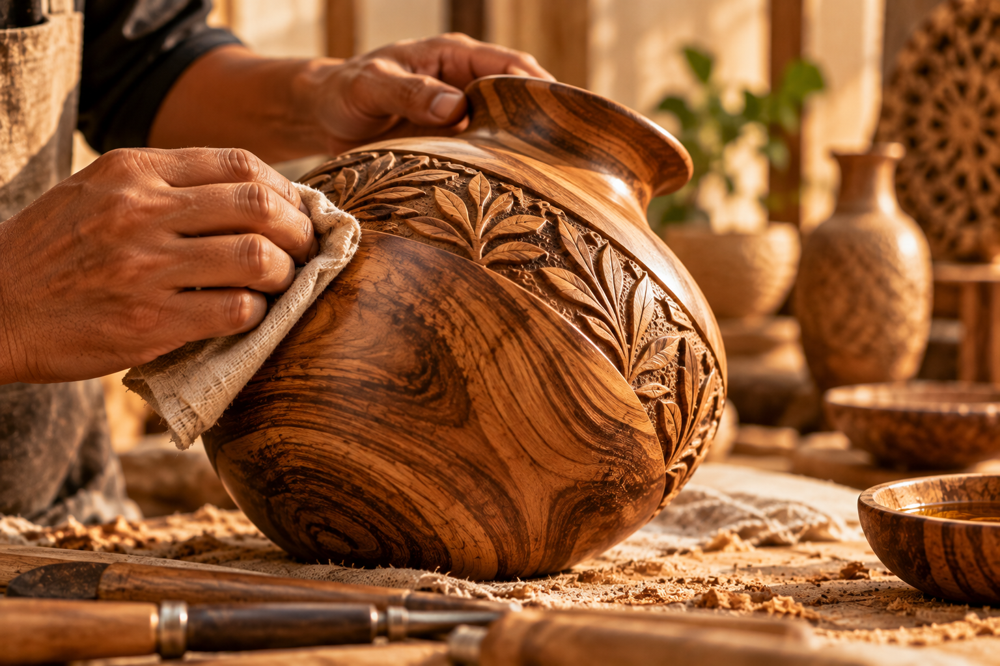
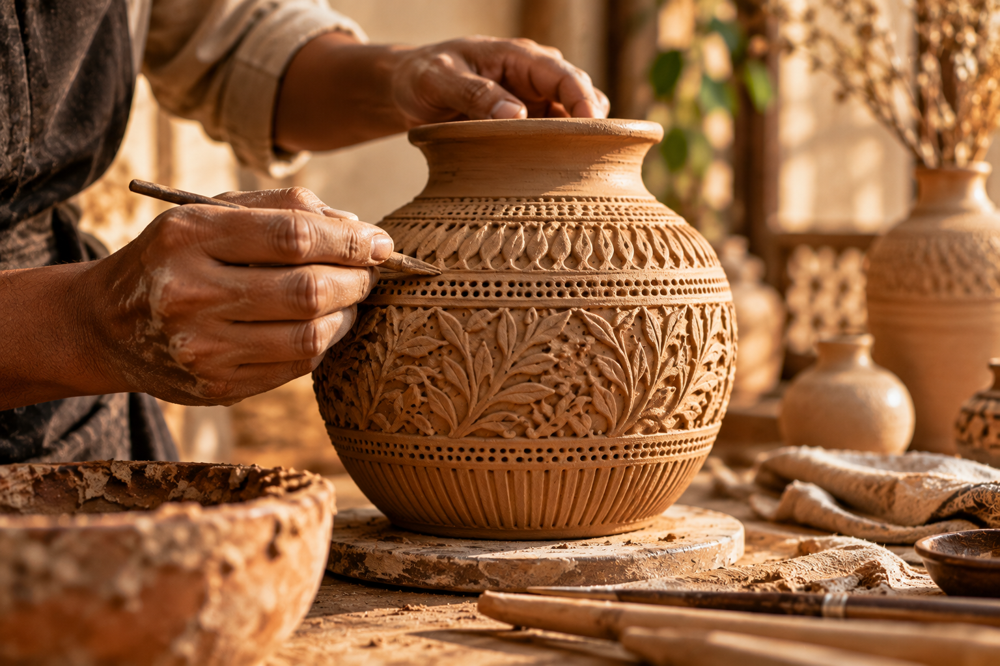
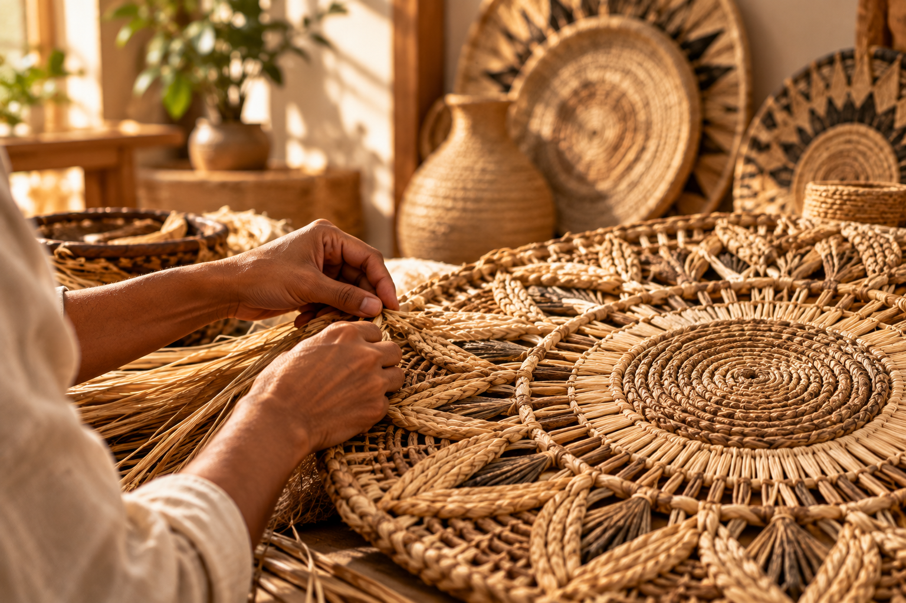
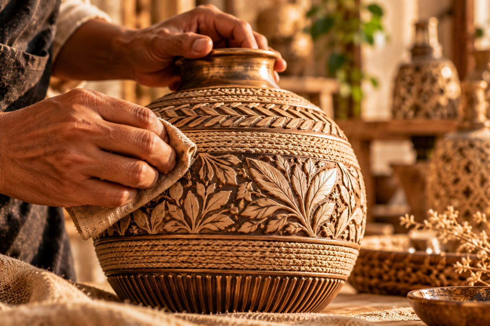

Thoughtful by design
Each form, finish, and detail has a purpose—bringing beauty into everyday life without adding noise.
Thoughtful design and handmade details bring warmth and character to everyday spaces.
Handmade details for lived-in spaces

We look beyond passing trends to bring together thoughtful design, lasting quality, and respect for the hands behind the craft.
Each form, finish, and detail has a purpose—bringing beauty into everyday life without adding noise.
We’re drawn to enduring character and careful finishing—qualities that feel at home beyond a single season.
Handmade work carries care, skill, and subtle variation. Those details are part of what makes a piece worth keeping.
Every piece follows a considered path—from choosing its materials to checking the details that make it ready for your home.

We consider the feel, tone, and purpose of each material before .

Through shaping, carving, weaving, or forming, the design takes on .

Surface, color, and small details are refined to bring the piece together.

We review the finished piece and its details before it makes its way to you.
Material is more than a starting point. Its texture, tone, and character shape how a piece feels in a room and how it becomes part of everyday life.
Warm grain and natural variation bring depth to considered forms.
A shaped, tactile surface gives each object a grounded presence.
Woven textures add softness, rhythm, and an easy sense of warmth.
Material details vary by piece. See each product description for its specific materials and care information.




Handmade work is not about perfect repetition. It is about the small, human details that give a piece its own presence in your home.
Slight differences in texture, tone, or form are part of a piece’s individual character.
Tool marks, hand-applied finishes, and considered edges show the making behind the object.
Each piece is reviewed for balance, finish, and the details that make it feel complete.
Explore thoughtful details, tactile materials, and handcrafted pieces for the spaces you call home.